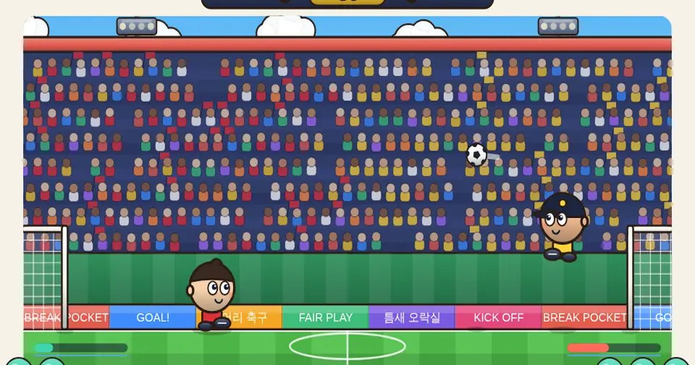

왕머리 축구
Bobblehead Soccer
대전 · 1P/2P무료설치 없음폰 · PC
▶ 지금 바로 하기로그인 없이 브라우저에서 바로 시작돼요
어떤 게임인가요?
나라와 선수를 골라 1:1 머리 큰 축구. 60초 승부, 동점이면 서든 데스! 게이지가 차면 파워 버튼으로 불꽃슛.
목표 · 60초 동안 상대 골대(오른쪽)에 더 많이 넣으면 승리. 동점이면 서든 데스(먼저 넣는 쪽이 승리).
이렇게도 찾아요
대두 축구머리 축구간단한 축구 게임2인용 축구축구 게임head ballbig head football2 player soccer
#대두축구 #머리축구 #축구게임 #2인용게임
게임 방법
- 머리 · 몸 · 발로 공을 다룹니다. 킥 버튼은 발차기, 점프 헤딩도 가능해요.
- 같은 방향을 빠르게 두 번 누르면 대시(순간 돌진). 파란 막대가 다시 찰 때까지 기다려야 해요.
- 파워 게이지는 시간이 지나거나 공을 만질수록 찹니다. 가득 차면 파워 버튼으로 선수마다 다른 파워슛을 씁니다 (선수마다 고유 필살기).
- 서든 데스 중에는 파워 게이지가 차지 않고 파워도 쓸 수 없어요.
- 공중에 아이템 방울이 떠요. 공으로 맞히면 효과가 납니다 (시작 화면에서 끄기 가능).
- 나라(유니폼)와 선수를 고를 수 있고, 선수마다 속도·점프·슛·게이지 능력이 달라요.
- 월드컵 모드: 16강 → 8강 → 4강 → 결승. 이길수록 상대가 강해지고, 한 번 지면 탈락. 4연승이면 트로피 (도중에 나가도 다음 판에서 이어져요).
등장하는 것들
- 선수별 파워슛 · 불꽃 · 번개 · 대포(기절) · 스카이 드롭 · 지그재그 · 바나나
- 대시 · 같은 방향 두 번
- 서든 데스 · 동점이면 다음 골로 결판
- 선수 능력 · 번개=발, 탱크=슛, 스프링=점프, 박사=게이지
- 큰 공 · 작은 공 · 공으로 아이템 방울을 건드리면 6초간 공 크기가 바뀜
- 얼음 · 마지막으로 공을 찬 선수의 상대가 1.8초 얼어붙음
- 왕머리 · 마지막으로 공을 찬 선수의 머리가 7초간 커짐
공략 팁
- 공 뒤쪽(내 골대 쪽)으로 돌아가서 차야 상대 골대로 날아가요.
- 상대가 파워를 모았으면 골대 앞을 비우지 마세요.
- 대시로 공을 먼저 빼앗고, 높은 공은 점프 헤딩으로 끊으세요.
 탑 쌓기
탑 쌓기 스도쿠
스도쿠 틀린 그림 찾기
틀린 그림 찾기 딱지치기
딱지치기 포탄 대작전
포탄 대작전 1 to 50
1 to 50